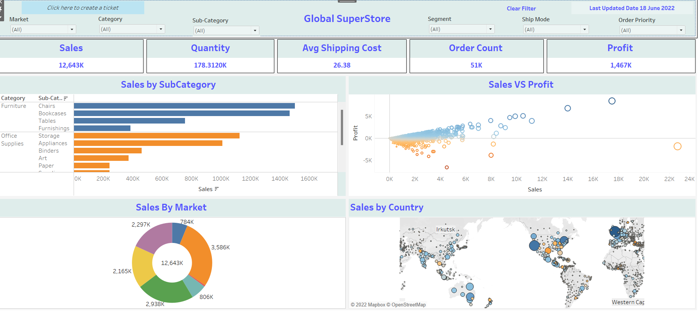

Here is a Project that I have worked on. It is based on the Sales of Adventure Works Cycles and its accessories. The Project was completed under the guidance of Mr.Lokesh Lalwani. The data consist of Orders from 2015 -2017 and is over 10 Regions across the world with data over 18k customers with 4 product categories, 37 subcategories, and 294 products.
Steps Involved in the process: Steps involved:
1. Import CSV Files onto the bi platform to perform the ETL process.
2. Using Power Query Editor to Clean the data.
3. Analyzing the tables and relationships to perform Data Modelling.
4. Writing DAX Queries.
5. Exploring various tooltip options and BI ribbons.
6. Developing an Interactive BI dashboard.
7. Publishing on Power BI Service

In this project I have used SQL and then transfered the data to tableau to create an interactive dashboard.Data consists of Sales across 7 Marketplaces.
The highest sales were achieved under category - Technology ,sub-category -Phones with max sales in Asia pacific region with Australia, India and China top the list under Consumer segment with approx. 243k Total sales.

A Dynamic dashboard on Sales dataset using measures.Steps involved:
1.Importing CSV Files onto bi platform to perform ETL process.
2.Using Power Query Editor to Clean the data.
3.Analyzing the tables and relationship to perform Data Modelling.
4.Writing DAX Queries.
5.Exploring various tooltip options and BI ribbons.
6.Developing an Interactive BI dashboard.
7.Publishing on Power BI Service.
Sharing a dashboard based on Zomato Restaurants Network Analysis 2015. Its clear from the visuals that New Delhi has most number of restaurants.
In Mangalore region, Sea food restaurants had the most number of ratings.
.
This Analysis is from a dataset that contains details of sales across major stores .

Here I have used Walmart data to get an insight for it sales and type of customer purchase.
Here is a Discriptive Customer Analysis dashboard that I made using Tableau.Dataset used is Sales-FY2020-21, to Analyse customer's shopping preferences. .
In this Project we clean Global superstore data using Power query editor,We then use Power Bi tool for data visualization.
{kind=link}
{kind=link}
{kind=link}
{kind=link}